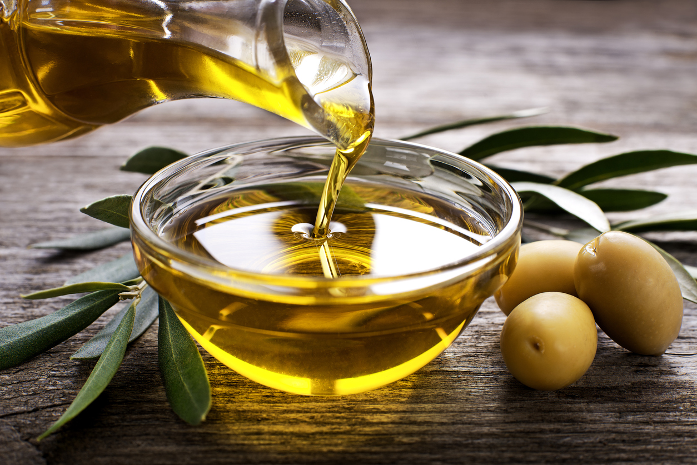

Blog de Cocina
Aceite y sal
Un aceite vegetal es un triglicérido extraído de una planta. El término "aceite vegetal" puede definirse estrechamente como referido solo a los aceites vegetales que son líquidos a temperatura ambiente, o definidos ampliamente sin tener en cuenta el estado de la materia de la sustancia a una temperatura dada.

La sal común o sal de mesa, conocida popularmente como sal, es un tipo de sal denominada cloruro sódico, cuya fórmula química es NaCl.
Back